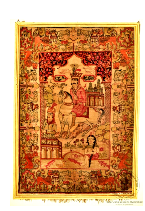

3. कालीन (ख़ुसरो और शिरीन का चित्रण)

अभिलेख संख्या: XIX-1
यह फ़ारसी कालीन चित्रात्मक और कथात्मक डिज़ाइन का एक दुर्लभ उदाहरण है। केंद्र में ख़ुसरो को घोड़े पर सवार दिखाया गया है, जबकि शिरीन छत (बरामदे) पर देखा जा सकता है। इस कालीन की विशेष पहचान यह है कि इसमें एक पुरुष घोड़े पर सवार है। सवार महलों, टीले और मछलियों से भरे तालाब के पास से होकर उस पर्वत की ओर जाता है जहाँ जंगली जानवर घूमते हैं। इस कालीन के चारों ओर तीन किनारी पट्टियाँ (बॉर्डर) हैं। मुख्य किनारी पट्टी में शिकरगढ़ (शिकार के दृश्य) अंकित हैं। किनारों को विचित्र और अद्भुत जीवों से सजाया गया है, जिनका स्वरूप लगभग पौराणिक है। इस पर दो पैनलों में लेख (शिलालेख) अंकित है। लेख फ़ारसी भाषा में नस्तालीक़ लिपि में लिखा गया है। यह फ़ारसी कालीन 20वीं सदी का है।
3. Carpet (Depicting Khusrau and Shireen)
Acc No: XIX-1
This Persian carpet is a rare example of pictorial and narrative design. Khusrau is shown at the centre mounted on a horse, while Shireen can be seen on the terrace. The distinguishing feature of this carpet is the man riding the horse. The rider passes palaces, a mound and a pond full of fish on his way towards the mountain where wild animals roam. Three border bands surround this carpet. The main border band carries shikargah (hunting scenes). The edges are ornamented with strange and wondrous creatures, almost mythical in form. An inscription appears in two panels. The inscription is written in Persian in the Nastaliq script. This Persian carpet dates from the 20th century AD.
3. కార్పెట్ (ఖుస్రూ మరియు షిరీన్ చిత్రణ)
🔇 Is bhasha me audio uplabdh nahi hai.
Acc No: XIX-1
ఈ పర్షియన్ తివాచీ చిత్రాత్మక మరియు కథనాత్మక డిజైన్కు ఒక అరుదైన ఉదాహరణ. మధ్యలో ఖుస్రూను గుర్రంపై స్వారీ చేస్తున్నట్లు చూపించారు, అదే సమయంలో షిరీన్ మిద్దెపై కనిపిస్తుంది. ఈ తివాచీ యొక్క ప్రత్యేక గుర్తింపు ఏమిటంటే ఇందులో ఒక పురుషుడు గుర్రంపై స్వారీ చేస్తున్నాడు. స్వారీ చేసేవాడు రాజభవనాలు, దిబ్బ మరియు చేపలతో నిండిన చెరువు దగ్గరి నుండి అడవి జంతువులు తిరిగే ఆ పర్వతం వైపు వెళ్తాడు. ఈ తివాచీ చుట్టూ మూడు అంచు పట్టీలు (బార్డర్లు) ఉన్నాయి. ప్రధాన అంచు పట్టీలో శికార్గఢ్ (వేట దృశ్యాలు) చిత్రించబడ్డాయి. అంచులు విచిత్రమైన మరియు అద్భుతమైన జీవులతో అలంకరించబడ్డాయి, వాటి రూపం దాదాపు పౌరాణికమైనది. దీనిపై రెండు ప్యానెళ్లలో శాసనం చెక్కబడింది. శాసనం పర్షియన్ భాషలో నస్తాలీక్ లిపిలో వ్రాయబడింది. ఈ పర్షియన్ తివాచీ క్రీ.శ. 20వ శతాబ్దానికి చెందినది.
۳. قالین (خسرو اور شیرین کی تصویر کشی)
Acc No: XIX-1
یہ ایرانی قالین تصویری اور داستانی ڈیزائن کی ایک نایاب مثال ہے۔ قالین کے مرکزی منظر میں خسرو گھوڑے پر سوار ہیں جبکہ شیرین کو چھت پر دیکھا جا سکتا ہے۔ اس قالین کی نمایاں خصوصیت یہ ہے کہ اس میں ایک مرد گھوڑے پر سوار دکھایا گیا ہے۔ سوار محلات، ٹیلوں اور مچھلیوں سے بھرے تالاب کے کنارے سے گزرتا ہوا اس پہاڑ کی سمت بڑھتا ہے جہاں جنگلی جانور گھومتے پھرتے ہیں۔ قالین کے اردگرد تین بارڈر ہیں، جن میں مرکزی بارڈر میں شکار گڑھ کے مناظر دکھائے گئے ہیں۔بارڈر کو عجیب و غریب مخلوقات سے سجایا گیا ہے جو تقریباً افسانوی نوعیت کی حامل ہیں۔ قالین میں دو پینلز میں تحریر بھی ہے، جو فارسی زبان میں نستعلیق خط میں لکھی گئی ہے۔ یہ ایرانی قالین بیسویں صدی کا ہے۔
৩. কার্পেট (খসরু ও শিরিনের চিত্র সংবলিত)
Acc No: XIX-1
এই পারস্য কার্পেটটি আলঙ্কারিক এবং আখ্যানমূলক নকশার একটি দুর্লভ উদাহরণ। এর কেন্দ্রীয় চরিত্রে দেখা যায় খসরু ঘোড়ায় চড়ে যাচ্ছেন, আর শিরিনকে দেখা যাচ্ছে প্রাসাদের অলিন্দে বা বারান্দায়।
এই কার্পেটটির বিশেষ বৈশিষ্ট্য হলো একটি মানুষের চিত্র রয়েছে ঘোড়ায় চড়ে। সেই আরোহী প্রাসাদ, ছোট পাহাড় এবং মাছভর্তি একটি পুকুর পেরিয়ে এমন এক পাহাড়ের দিকে যাচ্ছেন যেখানে বন্য প্রাণীরা ঘুরে বেড়াচ্ছে। এর চারপাশে তিনটি সীমানা রয়েছে, যার মধ্যে প্রধান বর্ডারটিতে 'শিকারগাহ' বা শিকারের বিভিন্ন দৃশ্য ফুটিয়ে তোলা হয়েছে। কার্পেটটির সীমানা বা বর্ডারগুলো প্রায় পৌরাণিক বৈশিষ্ট্যের অদ্ভুত ও বিস্ময়কর সব প্রাণীর নকশায় সজ্জিত। এর দুটি প্যানেলে শিলালিপি বা লিপি-খোদাই রয়েছে। এই লিপিগুলো পারস্য ভাষায় 'নাস্তালিক' লিপিতে লেখা। এই পারস্য দেশীয় কার্পেটটি বিংশ শতাব্দীর একটি নিদর্শন।
এই কার্পেটটির বিশেষ বৈশিষ্ট্য হলো একটি মানুষের চিত্র রয়েছে ঘোড়ায় চড়ে। সেই আরোহী প্রাসাদ, ছোট পাহাড় এবং মাছভর্তি একটি পুকুর পেরিয়ে এমন এক পাহাড়ের দিকে যাচ্ছেন যেখানে বন্য প্রাণীরা ঘুরে বেড়াচ্ছে। এর চারপাশে তিনটি সীমানা রয়েছে, যার মধ্যে প্রধান বর্ডারটিতে 'শিকারগাহ' বা শিকারের বিভিন্ন দৃশ্য ফুটিয়ে তোলা হয়েছে। কার্পেটটির সীমানা বা বর্ডারগুলো প্রায় পৌরাণিক বৈশিষ্ট্যের অদ্ভুত ও বিস্ময়কর সব প্রাণীর নকশায় সজ্জিত। এর দুটি প্যানেলে শিলালিপি বা লিপি-খোদাই রয়েছে। এই লিপিগুলো পারস্য ভাষায় 'নাস্তালিক' লিপিতে লেখা। এই পারস্য দেশীয় কার্পেটটি বিংশ শতাব্দীর একটি নিদর্শন।
૩. જાજમ (ખુસરો અને શિરીનને વર્ણવતું)
Acc No: XIX-1
આ પારસી કાર્પેટ પ્રતિનિધિત્વાત્મક અને કથાત્મક ડિઝાઇન ધરાવતો દુર્લભ ઉદાહરણ છે. કેન્દ્રમાં ખુસ્રાઉ ઘોડે ચડી રહ્યો છે, જ્યારે શીરીન છત પર દેખાઈ રહી છે. ખાસ ઓળખ આ કાર્પેટ પર એ છે કે એક પુરુષ ઘોડે સવાર છે. સવાર મહેલો, ઊંચાઈવાળા ટીલાઓ, અને માછલીઓથી ભરેલા તળાવની આસપાસથી પસાર થાય છે અને બીજી પર્વતીય જગ્યાએ પહોંચે છે જ્યાં જંગલી પ્રાણીઓ ફરતા હોય છે. આસપાસ ત્રણ બોર્ડર છે, જેમાં મુખ્ય બોર્ડર શિકરગઢ દૃશ્યો દર્શાવે છે. બોર્ડર અદ્વિતીય અને વિચિત્ર પ્રાણીઓથી શોભિત છે, જે લગભગ પૌરાણિક સ્વભાવ ધરાવે છે. શિલાલેખ બે પેનલમાં લખાયેલ છે. શિલાલેખ પારસી ભાષામાં નસ્તાલિક લિપિમાં લખાયું છે. આ પારસી કાર્પેટ 20મી સદીનું છે.
3. ಕಾರ್ಪೆಟ್ (ಡಿಪಿಕ್ಟಿಂಗ್ ಖುಸ್ರೋ ಅಂಡ್ ಶಿರೀನ್)
Acc No: XIX-1
ಈ ಪರ್ಷಿಯನ್ ರತ್ನಗಂಬಳಿಯು ವ್ಯಕ್ತಿಚಿತ್ರಗಳು ಮತ್ತು ಕಥೆಯನ್ನು ವಿವರಿಸುವ ವಿನ್ಯಾಸವನ್ನು ಹೊಂದಿರುವ ಒಂದು ಅಪರೂಪದ ಮಾದರಿ ಇದಾಗಿದೆ. ಇದರ ಮಧ್ಯಭಾಗದಲ್ಲಿರುವ ಮುಖ್ಯ ವ್ಯಕ್ತಿಯಾದ 'ಖುಸ್ರೋ' ಕುದುರೆಯ ಮೇಲೆ ಸವಾರಿ ಮಾಡುತ್ತಿದ್ದಾನೆ, ಮತ್ತು 'ಶಿರೀನ್'ಳನ್ನು ಮಹಡಿಯ ಮೇಲೆ ಕಾಣಬಹುದು. ಈ ರತ್ನಗಂಬಳಿಯ ಮೇಲಿರುವ ಪ್ರಮುಖ ಆಕರ್ಷಣೆ ಮತ್ತು ಗುರುತೆಂದರೆ, ಕುದುರೆಯ ಮೇಲಿರುವ ಈ ವ್ಯಕ್ತಿ. ಈ ಅಶ್ವಾರೋಹಿಯು ಅರಮನೆಗಳು , ಗುಡ್ಡಗಳು ಮತ್ತು ಮೀನುಗಳಿಂದ ತುಂಬಿರುವ ಕೊಳವನ್ನು ದಾಟಿ, ಕಾಡುಪ್ರಾಣಿಗಳು ತಿರುಗಾಡುತ್ತಿರುವ ಮತ್ತೊಂದು ಪರ್ವತದ ಕಡೆಗೆ ಪ್ರಯಾಣಿಸುತ್ತಾನೆ. ಇದರ ಸುತ್ತಲೂ ಮೂರು ಅಂಚುಗಳಿದ್ದು , ಅದರಲ್ಲಿನ ಮುಖ್ಯ ಅಂಚು 'ಶಿಕಾರ್ಗಢ್' ದೃಶ್ಯಗಳನ್ನು ಬಿಂಬಿಸುತ್ತದೆ. ಪೌರಾಣಿಕ ಪಾತ್ರ ಮತ್ತು ಸ್ವಭಾವವನ್ನು ಹೋಲುವ ವಿಚಿತ್ರ ಹಾಗೂ ಅದ್ಭುತವಾದ ಜೀವಿಗಳಿಂದ ಈ ಅಂಚನ್ನು ಅಲಂಕರಿಸಲಾಗಿದೆ. ಇದರ ಮೇಲಿರುವ ಬರಹಗಳನ್ನು ಎರಡು ಫಲಕಗಳಲ್ಲಿ ವಿಂಗಡಿಸಲಾಗಿದೆ. ಈ ಬರಹಗಳನ್ನು ಪರ್ಷಿಯನ್ ಭಾಷೆಯಲ್ಲಿ, 'ನಸ್ತಾಲಿಕ್' ಲಿಪಿಯಲ್ಲಿ ಬರೆಯಲಾಗಿದೆ. ಅಪರೂಪದ ಈ ಸುಂದರವಾದ ಪರ್ಷಿಯನ್ ರತ್ನಗಂಬಳಿಯು 20ನೇ ಶತಮಾನದಷ್ಟು ಹಳೆಯದಾಗಿದೆ.
୩. ଗାଲିଚା (ଖୁସରୋ ଏବଂ ଶିରିନଙ୍କ ଚିତ୍ରଣ)
Acc No: XIX-1
ଏହି ଫାରସୀ ଗାଲିଚା ଏକ ଚିତ୍ରାତ୍ମକ ଓ କାହାଣୀମୂଳକ ଡିଜାଇନ୍ର ଦୁର୍ଲଭ ଉଦାହରଣ। ମଧ୍ୟଭାଗରେ ଖୁସରୋଙ୍କୁ ଘୋଡ଼ାରେ ଅସୀନ ଅବସ୍ଥାରେ ଦେଖାଯାଇଛି, ଯେତେବେଳେ ଶିରିନ୍କୁ ଛାଦ (ବରାମଦା) ଉପରେ ଦେଖିବାକୁ ମିଳେ। ଏହି ଗାଲିଚାର ବିଶେଷ ଚିହ୍ନଟ ହେଉଛି ଏଥିରେ ଘୋଡ଼ାରେ ବସିଥିବା ଏକ ପୁରୁଷଙ୍କ ଚିତ୍ରଣ। ସେହି ଅଶ୍ଵାରୂଢ଼ ମହଲ, ଟିଲା ଓ ମାଛଭରା ପୋଖରୀ ପାଖରୁ ଯାଇ ସେହି ପର୍ବତ ଦିଗକୁ ଯାଉଛନ୍ତି,, ଯେଉଁଠାରେ ବନ୍ୟପ୍ରାଣୀମାନେ ଚରିଯାଉଛନ୍ତି। ଏହାର ଚାରିପାଖରେ ତିନୋଟି ସୀମା (ବର୍ଡର) ଅଛି, ଯାହାର ମୁଖ୍ୟ ସୀମାରେ ଶିକରଗଡ଼ (ଶିକାର ଦୃଶ୍ୟ) ଅଙ୍କିତ ଅଛି। କିନାରାଗୁଡ଼ିକୁ ଅଦ୍ଭୁତ ଓ ଆଶ୍ଚର୍ଯ୍ୟଜନକ ପ୍ରାଣୀମାନଙ୍କ ଆକୃତିରେ ସଜାଯାଇଛି, ଯେଉଁମାନଙ୍କ ରୂପ ପ୍ରାୟ ପୌରାଣିକ ସ୍ୱଭାବର। ଏହି ଗାଲିଚା ଉପରେ ଦୁଇଟି ପ୍ୟାନେଲ୍ରେ ଶିଳାଲେଖ ଅଛି, ଯାହା ଫାରସୀ ଭାଷାରେ ନସ୍ତାଲିକ୍ ଲିପିରେ ଲେଖାଯାଇଛି। ଏହି ଫାରସୀ ଗାଲିଚା ୨୦ଶତାବ୍ଦୀର।
3. गालिचा (खुसरो आणि शिरीन यांचे चित्रण)
🔇 Is bhasha me audio uplabdh nahi hai.
Acc No: XIX-1
हा पर्शियन गालिचा चित्रात्मक आणि कथात्मक नक्षीचे एक दुर्मिळ उदाहरण आहे. मध्यभागी खुसरोला घोड्यावर स्वार दाखवले आहे, तर शिरीन गच्चीवर (सज्जावर) दिसते. या गालिच्याची विशेष ओळख अशी की यात एक पुरुष घोड्यावर स्वार आहे. स्वार महाल, टेकडी आणि माशांनी भरलेल्या तळ्याजवळून त्या पर्वताच्या दिशेने जातो जिथे रानटी प्राणी फिरतात. या गालिच्याभोवती तीन किनारपट्ट्या (बॉर्डर) आहेत. मुख्य किनारपट्टीत शिकारगढ (शिकारीची दृश्ये) कोरलेली आहेत. कडा विचित्र आणि अद्भुत जीवांनी सजवलेल्या आहेत, ज्यांचे स्वरूप जवळजवळ पौराणिक आहे. यावर दोन पॅनेलमध्ये लेख (शिलालेख) कोरलेला आहे. लेख फार्सी भाषेत नस्तालीक लिपीत लिहिलेला आहे. हा पर्शियन गालिचा २०व्या शतकातील आहे.
3. പരവതാനി (ഖുസ്രുവിന്റെയും ഷിരീന്റെയും ചിത്രീകരണം)
Acc No: XIX-1
ഈ പേർഷ്യൻ പരവതാനി ചിത്രാത്മകവും ആഖ്യാനപരവുമായ ഡിസൈനിന്റെ അപൂർവ ഉദാഹരണമാണ്. മധ്യഭാഗത്ത് ഖുസ്രുവിനെ കുതിരപ്പുറത്ത് കാണിച്ചിരിക്കുന്നു, അതേസമയം ഷിരീനെ മട്ടുപ്പാവിൽ കാണാം. ഈ പരവതാനിയുടെ പ്രത്യേകത ഒരു പുരുഷൻ കുതിരപ്പുറത്ത് സവാരി ചെയ്യുന്നു എന്നതാണ്. കുതിരക്കാരൻ കൊട്ടാരങ്ങൾ, കുന്ന്, മീനുകൾ നിറഞ്ഞ കുളം എന്നിവയ്ക്ക് സമീപത്തുകൂടി കാട്ടുമൃഗങ്ങൾ അലയുന്ന ആ പർവതത്തിലേക്ക് പോകുന്നു. ഈ പരവതാനിക്ക് ചുറ്റും മൂന്ന് അതിർത്തിപ്പട്ടകൾ (ബോർഡർ) ഉണ്ട്. പ്രധാന അതിർത്തിപ്പട്ടയിൽ ശിക്കാർഗഢ് (വേട്ടയാടൽ ദൃശ്യങ്ങൾ) ആലേഖനം ചെയ്തിരിക്കുന്നു. അരികുകൾ വിചിത്രവും അത്ഭുതകരവുമായ ജീവികളാൽ അലങ്കരിച്ചിരിക്കുന്നു, അവയുടെ രൂപം ഏതാണ്ട് പുരാണപരമാണ്. ഇതിൽ രണ്ട് പാനലുകളിലായി ലിഖിതം ആലേഖനം ചെയ്തിട്ടുണ്ട്. ലിഖിതം പേർഷ്യൻ ഭാഷയിൽ നസ്തലീഖ് ലിപിയിലാണ് എഴുതിയിരിക്കുന്നത്. ഈ പേർഷ്യൻ പരവതാനി 20-ാം നൂറ്റാണ്ടിലേതാണ്.